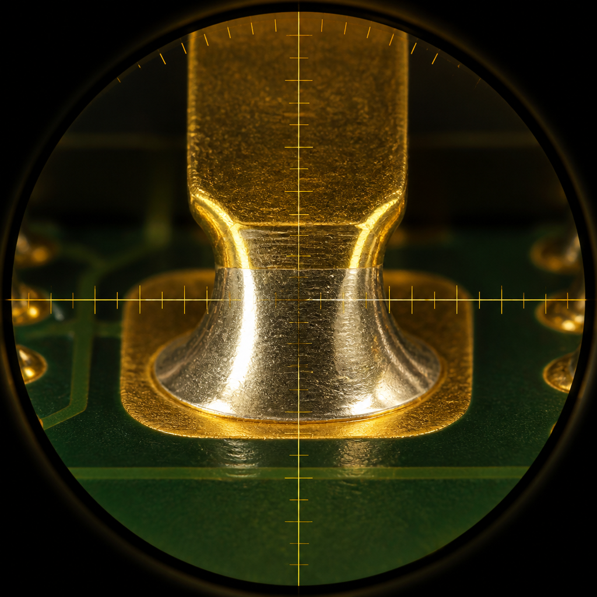

IPC — the Association Connecting Electronics Industries, formerly the Institute of Printed Circuits — is the global trade organization that publishes the acceptance standards governing every stage of PCB design, fabrication, and assembly. Founded in 1957, IPC now counts over 5,800 member companies across 70 countries, and its standards are the de facto language of quality in electronics manufacturing. If you have ever received PCBs that worked perfectly from one batch and failed mysteriously from the next, the difference almost always traces back to which IPC standard was specified — and how strictly it was enforced.
For PCB procurement, IPC standards are not optional reference material. They define the objective, measurable acceptance criteria that your contract manufacturer must meet: how much voiding is allowed in a solder joint, how much barrel fill a plated through-hole requires, what constitutes an acceptable annular ring breakout, and whether rework is permitted at all. Without a named IPC class and standard on your fabrication drawing, your manufacturer defaults to whatever internal guideline they choose — and you have no contractual basis to reject boards that fail prematurely in the field. At Huaxing, every order we process references an explicit IPC class, and our quality system is built around the inspection criteria defined in IPC-A-610, IPC-6012, and J-STD-001.
Key Point: A fabrication drawing that says "IPC Class 2" without naming which standard is ambiguous. IPC-A-610 Class 2 governs assembly acceptance; IPC-6012 Class 2 governs bare board fabrication. Always specify both when applicable, or state explicitly that assembly follows IPC-A-610 and fabrication follows IPC-6012.
IPC-A-610: Acceptability of Electronic Assemblies
IPC-A-610 is the most widely referenced standard in electronics manufacturing — and the one most engineers encounter first. Titled Acceptability of Electronic Assemblies, it establishes visual acceptance criteria for finished PCB assemblies: solder joint appearance, component placement, cleanliness, marking, and physical damage. Every solder joint on every board can be judged against the photographs and illustrations in IPC-A-610, making it the universal quality benchmark for PCBA inspection. The standard is revised regularly (revisions F, G, and H have each introduced important clarifications), and most manufacturers maintain the current revision plus one prior for legacy product continuity.
IPC-A-610 defines three progressively stringent product classifications. Each class represents a different balance of reliability requirements against manufacturing cost, and choosing the right class is the single most important specification decision you will make on a PCB project. The wrong choice can mean either field failures or unnecessary expense.
Class 1 — General Electronic Products
Class 1 applies to products where the primary requirement is function of the completed assembly. Cosmetic imperfections are acceptable as long as they do not impair the product's operation. A TV remote that looks slightly uneven inside its plastic shell is still a perfectly good remote. Class 1 allows lower barrel fill (typically 180 degrees of wetting or 50% vertical fill), permits some degree of annular ring breakout, and accepts a wider tolerance on solder joint appearance. Rework is freely allowed, and void percentages in BGA or QFN joints can be higher — up to 35-40% in X-ray inspection. Class 1 is the default when no class is specified, and for good reason: applying Class 3 criteria to a disposable consumer product would waste money without adding value.
Class 2 — Dedicated Service Electronic Products
Class 2 is the workhorse classification for commercial and industrial electronics. It demands extended life and uninterrupted service, though not to the point of life-critical reliability. Laptops, servers, industrial motor drives, and telecom base stations all typically specify Class 2. The requirements are materially tighter than Class 1: barrel fill in plated through-holes must reach 75% or 270 degrees of wetting; annular ring breakout is limited to 90 degrees or less from the land; solder joints must exhibit smooth, non-porous surfaces with proper wetting angles; void percentage targets drop below 25% for BGA joints. Cosmetic imperfections that do not affect form, fit, or function are still allowable, but the bar for what "affects function" is higher. Class 2 is the default standard at Huaxing for all commercial orders unless the customer specifies otherwise, and it represents the best cost-to-reliability ratio for the vast majority of products.
Class 3 — High Performance / High Reliability
Class 3 is where continued performance on demand and no equipment downtime become non-negotiable. Products that carry Class 3 certification — pacemakers, flight control computers, missile guidance systems, automotive airbag controllers — must function flawlessly in environments where failure means loss of life. The acceptance criteria reflect this: barrel fill must achieve 100% vertical fill (fully wetted from top to bottom land), annular ring breakout is essentially not permitted (zero breakout is the target, though IPC language allows for an "acceptable" condition that is vanishingly small), solder joint surfaces must be pristine with no evidence of disturbed solder, cold joints, or non-wetting, and voiding in hidden solder joints (BGA, QFN) is capped below 15%. Rework is either prohibited or severely restricted, and when permitted, it must follow documented procedures with full traceability. Producing Class 3 assemblies adds 20-40% to manufacturing cost compared to Class 2 because of the additional inspection time, the lower process windows, and the higher scrap rate from rejected joints that would pass at Class 2.
IPC-A-610 Class Comparison Table
| Criteria | Class 1 | Class 2 | Class 3 |
|---|---|---|---|
| Barrel Fill (PTH) | 180° wetting or 50% fill | 270° wetting or 75% fill | 360° wetting, 100% fill |
| Annular Ring Breakout | Breakout permitted if connection maintained | ≤90° breakout from land | Minimal breakout; essentially zero |
| Solder Joint Appearance | Functional; cosmetic defects allowed | Smooth, wetting angles acceptable; minor imperfections | Pristine surface; no non-wetting, de-wetting, or disturbed solder |
| Void Percentage (BGA/QFN) | ≤35-40% of joint area | ≤25% of joint area | ≤10-15% of joint area |
| Rework Allowed | Unrestricted | Allowed with documented process | Prohibited or strictly controlled with traceability |
| Typical Products | TV remotes, LED bulbs, toys | Laptops, servers, industrial controls | Pacemakers, avionics, ABS controllers |
| Cost Relative to Class 2 | ~85-90% | Baseline (100%) | ~120-140% |

IPC-6012: Qualification and Performance Specification for Rigid Printed Boards
Where IPC-A-610 addresses the finished assembly, IPC-6012 governs the bare printed circuit board itself. This is the fabrication-side standard — it sets the acceptance criteria your PCB supplier must meet before a single component is placed. IPC-6012 covers material quality, plating integrity, dimensional tolerances, solderability, and the test coupon regime used to verify that internal layers are properly bonded. Understanding IPC-6012 is essential because a perfectly assembled Class 3 board built on a Class 2 bare PCB is still only as reliable as its substrate.
The most important distinction between 6012 and 610 is the scope of inspection. IPC-A-610 criteria are primarily external and visual — an inspector can evaluate most solder joints under a microscope. IPC-6012 criteria are often internal — delamination, plating voids, and dielectric spacing between layers can only be verified through destructive cross-sectioning of test coupons, which is why microsection analysis is a central requirement of IPC-6012. Every production panel at Huaxing includes at least one test coupon that is sectioned, potted, polished, and microscopically examined to verify plating thickness, hole wall quality, and inner-layer bond integrity before the corresponding boards are shipped.
Microsection Coupons — The Hidden Quality Gate
A microsection coupon is a small sacrificial portion of the production panel — typically a tab along the panel edge — that duplicates the plated-hole and multilayer stack of the functional boards. After plating, the coupon is cut from the panel, encapsulated in epoxy, ground to the centerline of a row of plated holes, and examined at 100-200x magnification. The inspector verifies copper plating thickness (minimum 20-25 µm for Class 2, 25-30 µm for Class 3), checks for resin smear that could compromise layer-to-layer connections, and confirms that the copper-to-copper bond at the inner-layer interface shows no evidence of delamination or resin recession. A panel with a failed coupon is scrapped in its entirety — this is a pass/fail gate, not a sampling exercise. IPC-6012 defines the exact coupon design (IPC-2221 Type A or Type B coupons are most common), the number of coupons per panel, and the acceptance limits for each measurable parameter.
Key IPC-6012 Requirements by Class
| Requirement | Class 2 | Class 3 |
|---|---|---|
| Solderability Testing | Per IPC-J-STD-003; dip-and-look or wetting balance. Minimum 95% coverage on test pads. | Per IPC-J-STD-003 with tightened criteria. Wetting balance preferred; must demonstrate consistent wetting within 2 seconds of flux activation. |
| Delamination / Blistering | No delamination exceeding 25% of the area between conductors. Blisters <0.5 mm permitted if not bridging conductors. | No delamination or blistering of any size permitted. Zero tolerance for any separation of laminate layers. |
| Plated Hole Wall Thickness | Minimum average 20 µm copper; no single measurement <18 µm. | Minimum average 25 µm copper; no single measurement <20 µm. Void-free plating required. |
| Thermal Stress Test | Solder float at 288°C for 10 seconds; no evidence of delamination or interconnect separation. | Solder float at 288°C for 10 seconds, repeated for 6 cycles (thermal shock variant). No plating cracks or resin recession. |
| Microsection Frequency | Per AQL sampling plan; typically one coupon per lot. | Every panel; 100% coupon inspection. No sampling reduction permitted. |
| Surface Finish Integrity | Pinholes and nodules permitted if solderability not impaired. | Uniform, pore-free finish. ENIG nickel thickness 3-6 µm, gold 0.05-0.12 µm per IPC-4552. |
Thermal Stress and Reliability Testing
IPC-6012 mandates thermal stress testing to verify that the board can survive assembly temperatures without latent damage. The standard test involves floating a representative sample on molten solder at 288°C (the temperature of a typical lead-free wave solder pot) for 10 seconds, then inspecting for delamination, measling (internal micro-cracks in the resin), or hole wall separation. For Class 3, this test is often extended to thermal shock cycling: 6 cycles of 288°C solder float, or an equivalent IST (Interconnect Stress Test) that cycles coupons between room temperature and 230°C while continuously monitoring resistance through a daisy-chain via pattern. Any resistance increase greater than 10% during IST constitutes a failure. This test catches latent plating defects — particularly corner cracks at the knee of plated slots — that would manifest as intermittent opens after months of thermal cycling in the field.
IPC-6013: Qualification and Performance Specification for Flexible and Rigid-Flex Printed Boards
IPC-6013 extends the IPC-6012 framework to flexible circuits and rigid-flex assemblies. Flex and rigid-flex boards present unique failure modes that rigid board standards do not address: copper work-hardening and cracking through repeated bending, delamination of the adhesive layer between the copper foil and the polyimide base film, and misalignment of stiffeners that support connector areas. IPC-6013 defines the qualification tests and acceptance limits specific to these flexible substrates.
The defining performance characteristic of a flex circuit is its bend cycle endurance. IPC-6013 requires manufacturers to verify that the flexible sections of a board can survive the specified number of bend cycles at the design bend radius without developing conductor cracks. Testing follows IPC-TM-650 Method 2.4.3: a mandrel of the minimum design bend radius is used to repeatedly flex the circuit while electrical continuity is monitored. For dynamic flex applications (where the board bends repeatedly during normal operation, such as in a printer head or a laptop hinge), the requirement is typically millions of cycles. For static flex (bend-once-to-install, such as a folded interconnect inside a smartphone), the requirement is typically 10-100 cycles to confirm assembly survivability. The standard also addresses adhesive squeeze-out — the tendency of the bonding adhesive between polyimide layers to extrude beyond the edge of the coverlay during lamination, which can contaminate exposed pads and impair solderability. For Class 3 rigid-flex, squeeze-out exceeding 0.125 mm from the coverlay edge is rejectable. Stiffener alignment is another critical parameter: polyimide, FR4, or metal stiffeners bonded to flex tails must be placed within 0.15 mm of the design position for Class 2, and within 0.10 mm for Class 3, to ensure proper fit in the ZIF (zero insertion force) connectors they reinforce.
| IPC-6013 Parameter | Requirement Summary |
|---|---|
| Bend Cycle Test (Dynamic) | Mandrel test per IPC-TM-650 2.4.3; survive specified cycles at design radius with no conductor opens or resistance increase >10%. |
| Bend Cycle Test (Static) | 10-100 cycles at minimum design radius to confirm assembly survivability. |
| Adhesive Squeeze-Out | Class 2: ≤0.25 mm beyond coverlay edge. Class 3: ≤0.125 mm. Must not encroach on exposed pads. |
| Stiffener Alignment | Class 2: ±0.15 mm of design position. Class 3: ±0.10 mm. |
| Coverlay Registration | Class 2: clearance to nearest conductor ≥0.20 mm. Class 3: ≥0.25 mm to prevent copper exposure. |
| Plated Through-Hole in Rigid-Flex Transition Zone | Prohibited unless specifically designed with strain-relief features. Transition-zone vias are a common failure point. |
IPC-J-STD-001: Requirements for Soldered Electrical and Electronic Assemblies
IPC-J-STD-001 is the process-side companion to IPC-A-610. While IPC-A-610 answers the question "what does an acceptable solder joint look like?", J-STD-001 answers "what materials, methods, and process controls produce acceptable joints in the first place?" It is the standard that governs the soldering process itself — the specification your assembly partner's process engineers work to every day — and it covers hand soldering, wave soldering, reflow soldering, and selective soldering with equal authority.
J-STD-001 defines five key areas of process control. Materials: solder alloy composition must conform to the alloy specification (e.g., SAC305 must be Sn96.5Ag3.0Cu0.5 with tight impurity limits on lead, cadmium, and zinc); flux must be classified per IPC-J-STD-004 as ROL0, ROL1, ROM0, etc., and must be compatible with the cleaning process (or non-cleaning requirement) specified for the assembly. Tooling and Equipment: soldering irons must have calibrated tip temperature control (typically ±5°C of setpoint for Class 3); reflow ovens must undergo periodic thermal profiling with a thermocouple-instrumented test board that represents the thermal mass of the production assembly; wave solder pots must be analyzed for copper contamination monthly. Process Parameters: preheat ramp rates (typically 1-3°C/sec for lead-free reflow), time above liquidus (60-90 seconds for SAC305), peak temperature (235-250°C depending on component specifications), and cooling rates that avoid thermal shock — all defined with tolerances that narrow from Class 1 through Class 3. Workmanship: the standard includes detailed illustrations of acceptable and unacceptable joint geometries for every terminal type (gull-wing, J-lead, chip component, BGA, through-hole) and specifies the exact dimensions of the fillet, heel, and toe that define an acceptable joint. Verification: process control coupons, solder purity testing, and periodic destructive analysis of sample assemblies to verify internal joint integrity (cross-sectioning of BGA joints is a standard Class 3 verification requirement).
J-STD-001 vs. IPC-A-610 — The Process vs. Outcome Distinction
A common source of confusion: J-STD-001 and IPC-A-610 are not alternatives — they are complementary. J-STD-001 defines the process that produces solder joints; IPC-A-610 defines the acceptance criteria for the joints once produced. Conformance to J-STD-001 does not guarantee IPC-A-610 acceptance — a process can be perfectly compliant and still produce rejects if, for example, the thermal profile is correct but the paste stencil aperture is too small for a particular pad geometry. Conversely, a board can pass IPC-A-610 visual inspection and still have been produced with a non-compliant process that will cause latent failures. For a fully specified assembly, your documentation should reference both standards: "Assemble per IPC-J-STD-001 Class 2; inspect per IPC-A-610 Class 2."
IPC-4101: Specification for Base Materials for Rigid and Multilayer Printed Boards
IPC-4101 is the material specification that underpins every PCB manufactured. It defines the laminate and prepreg materials used as the substrate of a printed circuit board — the glass-reinforced epoxy (FR-4), polyimide, PTFE, and other dielectric materials that make up the core and prepreg layers of the board stack-up. Every laminate sheet that enters Huaxing's fabrication process is accompanied by a certificate of conformance that references a specific IPC-4101 slash sheet number, which identifies the exact material type and its performance grade.
IPC-4101 organizes materials by slash sheet numbers — each a self-contained specification for a material category. For example, IPC-4101/21 is the classic FR-4 laminate with a glass transition temperature (Tg) of 110-135°C, suitable for low-layer-count boards in consumer applications. IPC-4101/99 and /101 cover mid-Tg (150°C) FR-4 for lead-free assembly. IPC-4101/126 specifies high-Tg (170°C+) FR-4 for multilayer boards that will see multiple reflow cycles. Beyond FR-4, IPC-4101/40 and /41 cover polyimide laminates for high-temperature and flex applications; IPC-4101/50 covers BT (bismaleimide-triazine) for IC substrates; and IPC-4103 defines the polyimide films used in flexible circuits. The slash sheet specifies critical parameters: glass transition temperature (by TMA and DSC), decomposition temperature (Td, the temperature at which 5% weight loss occurs), dielectric constant (Dk) and dissipation factor (Df) at specified frequencies, peel strength of copper foil to laminate after thermal stress, and flammability rating (V-0 per UL 94).
For the majority of commercial PCB orders, the laminate specification is implicit — the fabricator selects an IPC-4101-compliant material that meets the stated Tg and CTI (Comparative Tracking Index) requirements. But for high-frequency RF designs, high-voltage applications, or any board that will operate above 130°C ambient, the material specification becomes critical and should be explicitly called out by slash sheet number on the fabrication drawing. A 20-layer backplane built on IPC-4101/21 rather than /126 will delaminate during assembly; a 5 GHz antenna board built on standard FR-4 rather than a low-Dk material like IPC-4103 (for PTFE/ceramic composites) will have unusable signal integrity.
| IPC-4101 Slash Sheet | Material Type | Typical Tg | Typical Use |
|---|---|---|---|
| IPC-4101/21 | Standard FR-4, brominated flame retardant | 110-135°C | 2-4 layer consumer PCBs, single-sided boards |
| IPC-4101/99, /101 | Mid-Tg FR-4, lead-free compatible | 150°C | 4-8 layer commercial and industrial boards |
| IPC-4101/126 | High-Tg FR-4, dicy-free curing | 170-180°C | 8-32 layer HDI, multiple reflow cycles, automotive |
| IPC-4101/40 | Polyimide laminate (rigid) | 250°C+ | Downhole drilling, aerospace, high-temp industrial |
| IPC-4101/50 | BT-Epoxy (bismaleimide-triazine) | 180-220°C | IC substrates, chip-scale packaging, fine-pitch BGA |
| IPC-4103 (sister standard) | Polyimide film, adhesive and adhesiveless | N/A (decomposition >400°C) | Flexible circuits, rigid-flex, high-frequency antennas |
IPC-2581: Generic Requirements for Design Data Transfer
IPC-2581 is a relatively recent standard that addresses a persistent problem in PCB design-to-manufacturing handoff: the fragmented nature of fabrication data. For decades, a PCB designer has had to generate a Gerber file set for each layer, a separate NC drill file (Excellon format), a separate netlist (IPC-D-356 or IPC-D-356A), a separate bill of materials, a separate pick-and-place centroid file, and a separate fabrication drawing as a PDF or DXF. Each of these files is an independent artifact with no internal consistency checking — the netlist and the Gerber files can describe different connectivity, and neither the designer nor the fabricator catches the discrepancy until boards arrive with open circuits.
IPC-2581 solves this by consolidating all design data into a single XML-based container format. An IPC-2581 file (extension .cvg or .xml) carries the full layer stack-up definition, copper geometry for every layer, drill data (plated and non-plated holes separately), solder mask and legend artwork, the netlist with component-to-pin mapping, the bill of materials with manufacturer part numbers and reference designators, the pick-and-place data, and the fabrication notes — all in one file. The format is open, vendor-neutral, and human-readable (XML with a published schema), and it eliminates the single most common source of PCB manufacturing errors: version mismatches between the Gerber files and the netlist. Major EDA tools — Altium Designer, Cadence Allegro, KiCad, Zuken CR-8000 — now support IPC-2581 export, and most PCB fabricators, including Huaxing, accept IPC-2581 as a preferred input format alongside traditional Gerber RS-274X.
Recommendation: If your EDA tool supports IPC-2581 export, use it. An IPC-2581 file plus a PDF fabrication drawing is a more reliable manufacturing package than a folder full of Gerber files. The internal consistency check that a single-file format provides catches connectivity mismatches at the CAM station before the first panel is imaged, potentially saving thousands of dollars in scrapped material. For designs with controlled-impedance traces, the stack-up information embedded in the IPC-2581 file ensures the fabricator has the correct dielectric thickness and trace width targets without manual transcription from a separate document.
How to Specify IPC Requirements on Your Fabrication Drawing
Specifying IPC standards correctly is straightforward but frequently done wrong. A vague note — "manufacture to IPC standards" — is functionally identical to providing no specification at all: it does not identify which standard, which class, or which revision, and it gives your manufacturer no objective criteria to inspect against. The following checklist covers the essential IPC references that belong on every fabrication and assembly drawing.
Note the IPC Class and Standard Explicitly on the Fabrication Drawing
Write: "Fabricate per IPC-6012 Class 2" and "Inspect per IPC-A-610 Class 2 Acceptability." Do not write "IPC Class 2" alone — it leaves ambiguous whether you mean the fabrication standard, the assembly standard, or the soldering standard. For most commercial products, Class 2 is the correct starting point; escalate to Class 3 only for life-safety, mission-critical, or high-reliability applications where field failure is unacceptable. Include the revision letter if your design was qualified to a specific revision (e.g., "IPC-A-610 Rev H").
Reference the Correct Standard for Each Manufacturing Stage
Bare board fabrication: IPC-6012 for rigid, IPC-6013 for flex/rigid-flex. Assembly process: IPC-J-STD-001. Finished assembly inspection: IPC-A-610. If you use exotic base materials, add IPC-4101 with the slash sheet number. If the design uses controlled impedance, reference the impedance test method (IPC-TM-650 2.5.5.7 for TDR). Each standard addresses a distinct phase; referencing only IPC-A-610 gives your fabricator no guidance on bare board quality.
Specify the Laminate Material When Performance Depends On It
For standard commercial boards, "FR-4, Tg ≥ 150°C per IPC-4101/101" is sufficient. For RF/microwave boards, specify the exact laminate (e.g., "Rogers RO4350B, 0.254 mm, Dk 3.48 ±0.05 at 10 GHz, per IPC-4103"). For high-reliability multilayer boards, specify high-Tg FR-4 per IPC-4101/126 (Tg ≥ 170°C) and require the laminate C of C (Certificate of Conformance) to be included in the FAIR (First Article Inspection Report). The material specification is the one IPC reference that directly impacts electrical performance; do not leave it to the fabricator's discretion on performance-critical boards.
Verify Manufacturer Compliance — Ask for Evidence
A manufacturer can claim "we build to Class 3" without independent verification. Request a completed First Article Inspection Report (FAIR) per AS9102 or the simpler IPC-FA251 form for the first production lot. For Class 3 orders, require microsection photographs of test coupons with measurement annotations. For any order, ask whether the manufacturer's quality management system is certified to ISO 9001:2015 (process quality) and whether they hold UL recognition (safety compliance for the finished board). IPC itself offers a Qualified Manufacturers Listing (QML) program — manufacturers who pass IPC's own audit appear on the IPC QML and are subject to periodic re-audit. Huaxing holds ISO 9001 certification, UL E354321 recognition, and IPC membership with staff certified to IPC-A-610 and J-STD-001.
Avoid Common Mistakes in IPC Specification
Mistake 1: Specifying Class 3 for a product that does not need it. The cost premium is real (20-40%) and the yield loss on cosmetic criteria that do not affect product reliability wastes money. Reserve Class 3 for life-safety, mission-critical, and extreme-environment applications. Mistake 2: Referencing a standard revision that the manufacturer does not support. Most manufacturers work to the current revision and one revision back. If your legacy product was qualified to IPC-A-610 Rev D, confirm that your manufacturer still maintains that revision's inspection criteria on file. Mistake 3: Failing to specify solder mask and legend standards. IPC-SM-840 governs solder mask qualification; IPC-4781 governs legend ink performance. For boards with fine-pitch components (<0.5 mm pitch), specify the solder mask dam width explicitly rather than relying on the IPC default. Mistake 4: Confusing IPC class with military or aerospace standards. MIL-PRF-55110 (rigid boards) and MIL-PRF-31032 (performance spec) have distinct, overlapping, and sometimes contradictory requirements with IPC standards. If your contract requires MIL compliance, state it separately — IPC compliance does not imply MIL compliance.
Huaxing PCBA IPC Compliance
The following table summarizes which IPC standards Huaxing is compliant with, the scope of compliance, and how compliance is verified in our quality management system.
| IPC Standard | Huaxing Compliance | Verification Method |
|---|---|---|
| IPC-A-610 (Assembly Acceptance) | Fully compliant, Classes 1-3. All QC inspectors certified to current revision. | IPC-A-610 CIT (Certified IPC Trainer) on staff; inspectors re-certified every 24 months. Inline AOI (Automated Optical Inspection) calibrated to IPC-A-610 criteria for Class 2 and Class 3 thresholds. |
| IPC-6012 (Rigid Board Qualification) | Fully compliant, Classes 2 and 3. Class 3 available on request. | Microsection coupon analysis on every production lot. Plating thickness verified by XRF and cross-section. Thermal stress testing per IPC-TM-650 2.6.8. Certificates of conformance included with every shipment. |
| IPC-6013 (Flex & Rigid-Flex Qualification) | Fully compliant, Classes 2 and 3. | Bend cycle endurance testing per IPC-TM-650 2.4.3 at customer-specified radius and cycle count. Dimensional inspection for stiffener alignment and coverlay registration on first-article and in-process samples. |
| IPC-J-STD-001 (Soldering Requirements) | Fully compliant, Classes 1-3. | All soldering operators trained and certified. Reflow profiles validated per assembly type with thermocouple-instrumented test boards. Solder purity analysis performed monthly per J-STD-006. |
| IPC-4101 (Base Materials) | Compliant — materials sourced from IPC-4101-certified laminate suppliers. | Laminate C of C reviewed for every incoming lot. Tg verified by DSC on sample basis. Material traceability maintained from supplier lot to finished board serial number. |
| IPC-2581 (Data Transfer Format) | Accepted as preferred input format alongside Gerber RS-274X. | IPC-2581 files validated in CAM (Genesis / InCAM) before panelization. Stack-up and netlist cross-checked against embedded IPC-2581 data; discrepancies flagged in pre-production DFM report. |
| IPC-SM-840 (Solder Mask) | Compliant — all solder mask materials qualified to IPC-SM-840 Class H. | Adhesion testing per IPC-TM-650 2.4.28.1. Dielectric withstanding voltage verified on qualification coupons for every new solder mask batch. |